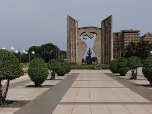

Explorons le togo

Description

Le Togo est un pays d'Afrique de l'Ouest situé dans le golfe de Guinée. Il est connu pour ses plages bordées de palmiers et ses villages au sommet des collines.
d'une superficie de 56 785 km2 dont la longueur est de 600 km et la largeur varie de 50 à 150 km.Le pays possède 1 700 km de frontière avec le Burkina Faso, le Ghana et le Bénin et 50 km de côtes donnant sur le golfe de Guinée.
L'érosion y est très importante : en six ans, l'eau a avancé de 140 m .
Places à visiter avec liens google maps
- lome
- Kpalime
- Atakpamé
Anecdotes
- La catastrophe aérienne de Sarakawa est un accident aérien survenu le 24 janvier 1974 à proximité de la petite localité de Sara-kawa, dans le nord de la république du Togo. Pour des raisons demeurées inexpliquées, un Douglas C-47 Skytrain effectuant la liaison entre les villes de Lomé et de Pya2,3,transportant plusieurs personnalités politiques et militaires togolaises dont le président de la république Gnassingbé Eyadéma, s'écrase en pleine brousse. Si le président sort indemne de l'accident, il n'en est pas de même de trois de ses généraux, du pilote de l'appareil,
Jean Cattin, et de son copilote Bertrand Delaire
- Sentinelle, que dis-tu de la nuit ?
«La nuit est longue, mais le jour vient», répond la sentinelle.
- Leur histoire commence lorsque des femmes togolaises décident de se rendre à Ghana pour acheter des pagnes et les revendre au Togo. Alors que le Ghana est frappé par la crise, les Nanas Wax entrent en œuvre et saisissent l’opportunité en vendant des pagnes aux autres commerçants de la sous-région, dont le Ghana, la Côte d’Ivoire, et le Bénin. qui adoptent immédiatement le pagne, attirés par les couleurs vives et aux motifs originaux de celui-ci.
Le business du pagne finit par muter au Togo.